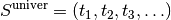
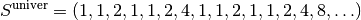
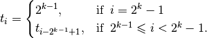
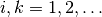
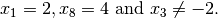
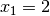
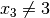
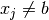

7.2. Restarting the search
Restarting the search - especially after having gathered some information - can dramatically improve the search[1] (see [Gomes1998] for instance). It is well known that the first decisions taken at the beginning of a search can have an enormous impact on the search tree size and the time required to visit this tree in part or in whole.
The CP solver provides two restart strategies:
- constant restart and
- Luby restart.
Both restart strategies are implemented by SearchMonitors. We detail both strategies in the next sub-sections. Some information is collected during a search and is kept to guide a restarted search. NoGoods (when used) are among them and we discuss them below[2].
7.2.1. Constant Restart
As its name implies, constant restart restarts the search periodically. The factory method
SearchMonitor* Solver::MakeConstantRestart(int frequency);
creates a ConstantRestart SearchMonitor. The frequency parameter indicates how many failures are allowed before the CP Solver restarts the search.
7.2.2. Luby
In a now well-known article [Luby1993], Luby et al. describe an optimal (universal) strategy  to restart a search (an algorithm) that has a certain randomness in it but that is guaranteed to converge to a solution given enough time.  is called a run length: a number of iterations in the algorithm. To apply this strategy, you first let the algorithm run for
is called a run length: a number of iterations in the algorithm. To apply this strategy, you first let the algorithm run for  iterations, than restart it and let it run for
iterations, than restart it and let it run for  iterations and so on.
iterations and so on.
We will not go into the (rather technical) details of this article. For the curious reader, here is this optimal strategy:

or more formally:

with . Notice that all the run lengths are power of 2 and that each sequence is repeated before a new power of 2 is tried.
The factory method of the Solver class is the following:
SearchMonitor* Solver::MakeLubyRestart(int scale_factor);
It creates a LubyRestart SearchMonitor. In our implementation, the solver will restart the search after scale_factor * Luby(n) failures where n = 1, 2, 3, ... denotes each iteration when the solver restarts and Luby() returns the above sequence.
7.2.3. NoGoods
This is an advanced feature that hasn’t been tested as thoroughly as the rest of the code.
Warning
NoGoods haven’t been tested as thoroughly as the rest of the code.
The basic idea of a nogood is simple: keeping a list of contradictory variable “assignments”. These contradictory variable assignments can be stated before or/and during the search. The idea is to use these nogoods in the search to - hopefully - cut short some branches for the search tree without having to rediscover these contradictory assignments again and again. This is especially useful when restarting the search.
An example will clarify our discussion. Let’s say that during the search, a procedure finds that the following variable assignments lead to a failure:

The list of the 3 variable “assignments” is a nogood. Whenever we have these three conditions, we know for sure that they lead to a failure. This information could lead to some refinements in the search. In our (basic) implementation of nogoods, we only use this information to propagate the nogood[3].
Each clause (such as  and ) are held in an abstract NoGoodTerm class. At the time of writing (7 th of January 2015, r3832), only the clauses and  have been implemented, both in the specialized IntegerVariableNoGoodTerm class. A Boolean assign variable distinguishes both cases. The NoGood class is basically a container for such clauses. Its only (private) variable is:
std::vector<NoGoodTerm*> terms_;
The NoGood class has two methods to add these two types of clauses:
void NoGood::AddIntegerVariableEqualValueTerm(IntVar* const var,
int64 value) {
terms_.push_back(new IntegerVariableNoGoodTerm(var, value, true));
}
and
void NoGood::AddIntegerVariableNotEqualValueTerm(IntVar* const var,
int64 value) {
terms_.push_back(new IntegerVariableNoGoodTerm(var, value, false));
}
The assign variable (third parameter of the IntegerVariableNoGoodTerm constructor) is set to true in AddIntegerVariableEqualValueTerm and to false in AddIntegerVariableNotEqualValueTerm.
To store several NoGoods we use a specialized class derived from the NoGoodManager class. At the time of writing, one such class exists:
class NaiveNoGoodManager : public NoGoodManager {...};
with the corresponding factory method:
NoGoodManager* Solver::MakeNoGoodManager() {
return RevAlloc(new NaiveNoGoodManager(this));
}
As its name implies, this class doesn’t do much more than collect and propagate the nogoods but it can be used as a base example to develop your own NoGoodManager.
Its only (private) variable is a list of nogoods:
std::vector<NoGood*> nogoods_;
To see the NoGoods in action, we refer the reader to the code written for the default search in the file default_search.cc, especially the RestartMonitor SearchMonitor that uses a NoGoodManager. A (basic) mechanism is implemented to create and collect NoGoods obtained from diving heuristics[4]. Once such heuristic finds a contradictory variable assignment, a NoGood is created and the search might or might not be restarted.
Footnote
| [1] | For both heuristic and exact searches. |
| [2] | What else is kept during a restart of the search? Essentially, impact-based searches also keep their estimations. See the section Impact based search strategies in this chapter for more. |
| [3] | This process is really basic: if there is only one undecided clause (term) and all the other clauses are verified, then the opposite of this undecided clause is added to the solver. |
| [4] | A diving heuristic is an heuristic that dives into the search tree, assigning values one after the other to variables. |
Bibliography
| [Luby1993] |
|
| [Gomes1998] | C. P. Gomes, B. Selman, and H. Kautz, Boosting Combinatorial Search Through Randomization, presented at National Conference on Artificial Intelligence (AAAI), Madison, WI, 1998. |
Google or-tools |
User's Manual
Google search
Welcome
Tutorial examples
Current chapter
7. Meta-heuristics: several previous problems
Previous section
7.1. Search limits and SearchLimits
Next section
7.3. Meta-heuristics in or-tools